Sig: Optimización de Código Sup: Análisis Sintáctico Descendente en Ant: Generación de Código: Máquina Con:
En esta sección introduciremos una máquina basada en registros.
Suponemos que la máquina tiene  registros
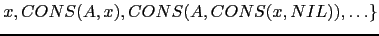.
Las instrucciones toman dos argumentos, dejando el resultado en
el primer argumento. Son las siguientes:
registros
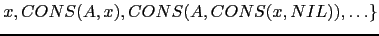.
Las instrucciones toman dos argumentos, dejando el resultado en
el primer argumento. Son las siguientes:
LOADM Ri, [a] |
|
LOADC Ri, c |
|
STORE [a], Ri |
|
ADDR Ri, Rj |
|
ADDM Ri, [a] |
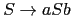 |
ADDC Ri, c |
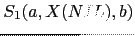 |
| ... | ... |
El problema es generar el código con el menor número de instrucciones posible, teniendo en cuenta la limitación existente de registros.
Supongamos que queremos traducir un subárbol
 y que la traducción del subárbol 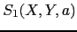 requiere
y que la traducción del subárbol 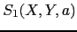 requiere  registros
y que la traducción de
registros
y que la traducción de  requiere
requiere  registros, con
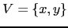.
Si realizamos primero la evaluación de , debemos dejar el
resultado en un registro que no podrá ser utilizado en la evaluación de
registros, con
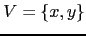.
Si realizamos primero la evaluación de , debemos dejar el
resultado en un registro que no podrá ser utilizado en la evaluación de
 . Si
. Si  , la evaluación de
, la evaluación de  podría dar lugar
a la necesidad de recurrir a almacenamiento temporal.
Esta situación no se da si evaluamos primero
podría dar lugar
a la necesidad de recurrir a almacenamiento temporal.
Esta situación no se da si evaluamos primero  .
En tal caso, dado que hay un registro en el que se guarda el resultado de
.
En tal caso, dado que hay un registro en el que se guarda el resultado de
 , quedan libres al menos
, quedan libres al menos  registros.
Como
registros.
Como
 se sigue que tenemos suficientes registros
para traducir .
Como regla general es mejor evaluar primero el subárbol
que mayores requerimientos de registros tiene.
se sigue que tenemos suficientes registros
para traducir .
Como regla general es mejor evaluar primero el subárbol
que mayores requerimientos de registros tiene.
La siguiente cuestión es como calcular los requerimientos en registros
de una expresión dada. No consideraremos en esta fase límites en el número de
registros disponibles. Obsérvese que si los requerimientos para los subárboles
son distintos,
 la traducción puede realizarse usando
el máximo de ambos
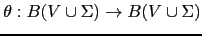 siguiendo la estrategia
de traducir primero el que mayores requerimentos tenga.
Si son iguales entonces se necesitan 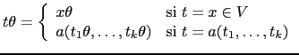
registros ya que es necesario un registro para guardar el resultado de
la primera traducción.
la traducción puede realizarse usando
el máximo de ambos
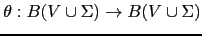 siguiendo la estrategia
de traducir primero el que mayores requerimentos tenga.
Si son iguales entonces se necesitan 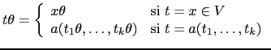
registros ya que es necesario un registro para guardar el resultado de
la primera traducción.
Nótese que, como el juego de instrucciones
para un operando puede tener como segundo argumento una dirección de memoria,
los ``segundos operandos'' no necesitan registro. Por ejemplo,
el árbol  se traduce por
se traduce por
LOADM R0, a PLUSM R0, b
Asi 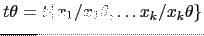 no requiere registro, mientras que  si lo requiere. Por tanto, las
hojas izquierdas requieren de registro mientras que las hojas derechas no.
si lo requiere. Por tanto, las
hojas izquierdas requieren de registro mientras que las hojas derechas no.
Si  es un nodo de la forma
es un nodo de la forma
 el número de registros 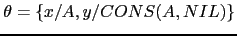 requeridos por
el número de registros 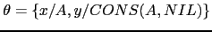 requeridos por  viene dado por
la fórmula:
viene dado por
la fórmula:

Dotaremos a cada nodo del AST de un método required_registers
que computa la demanda en registros de dicho nodo.
Lo que haremos es introducir en la clase Operation de la cual heredan
las operaciones binarias el correspondiente método required_registers:
package Operation;
our @ISA = ("Binary");
sub required_registers {
my $self = shift;
my $rl = $self->LEFT->required_registers('LEFT');
my $rr = $self->RIGHT->required_registers('RIGHT');
$self->{REQ_REG} = ($rl == $rr)? $rl+1: Aux::max($rl, $rr);
return $self->REQ_REG;
}
El segundo argumento que recibe required_registers es
su posición (izquierda o derecha) entre los hijos de su padre.
dicha información no es usada en los nodos binarios.
Su necesidad queda clara cuando se considera el cómputo
del número de registros requeridos por las hojas.
El cómputo en las hojas corre a cargo del correspondiente método
en la clase Value. Los nodos de tipo número (clase NUM), cadena
(clase STR) y variable (clase ID)
heredan de la clase Value.
package Value;
our @ISA = ("Leaf");
sub required_registers {
my $self = shift;
my $position = shift;
$self->{REQ_REG} = ($position eq 'LEFT') ? 1 : 0;
return $self->REQ_REG;
}
El atributo REQ_REG se computa para cada una de las sentencias
del programa:
package STATEMENTS;
sub required_registers {
my $self = shift;
my @sts = @{$self};
for (@sts) {
$_->required_registers;
}
}
Por supuesto los nodos ASSIGN y PRINT
poseen sus propios métodos required_registers.
Una vez computados los requerimientos en registros de cada
nódo, la generación de código para un nodo gestiona la
asignación de registros usando una cola en la que se guardan
los registros disponibles. Se
siguen básicamente dos reglas para la traducción de un
nodo Operation:
Hay cuatro casos a considerar: el primero es que el operando derecho sea una hoja. La generación de código para este caso es:
package Operation;
our @ISA = ("Binary");
...
sub gen_code {
my $self = shift;
if ($self->RIGHT->isa('Leaf')) {
my $right = $self->RIGHT;
my $a = $right->VAL;
my $rightoperand = $right->gen_operand; # valor o dirección
my $key = $right->key; # M, C, etc.
$self->LEFT->gen_code;
Aux::emit($self->nemonic."$key $RSTACK[0], $rightoperand # $a\n");
}
...
}
La generación del nemónico se basa en tres métodos:
nemonic devuelve el nemónico asociado con el nodo.
Por ejemplo, para la clase TIMES el código es:
sub nemonic {
return "MULT";
}
key devuelve el sufijo que hay que añadir
para completar el nemónico, en términos de como sea el
operando: C para los números, M para los
identificadores, etc.
gen_operand genera el operando. Así para las clases
número e identificador su código es:
package NUM;
...
sub gen_operand {
my $self = shift;
return $self->VAL;
}
|
package ID;
...
sub gen_operand {
my $self = shift;
return $symbol_table{$self->VAL}->{ADDRESS},
}
|
El resto del código distingue tres casos,
según sean  ,
,  y el número de registros
disponibles.
Los dos primeros casos desglosan
la posibilidad de que uno de los dos subárboles
pueda realizarse con el número de registros
disponible (
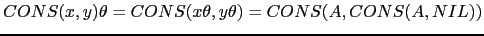).
El tercer caso corresponde a que
se necesiten temporales:
y el número de registros
disponibles.
Los dos primeros casos desglosan
la posibilidad de que uno de los dos subárboles
pueda realizarse con el número de registros
disponible (
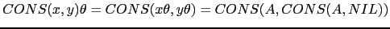).
El tercer caso corresponde a que
se necesiten temporales:
 .
.
1 ...
2 if ($self->RIGHT->isa('Leaf')) { ... }
3 else { # Hijo derecho no es una hoja
4 my ($t1, $t2) = ($self->LEFT, $self->RIGHT);
5 my ($r1, $r2) = ($t1->REQ_REG, $t2->REQ_REG);
6
7 if ($r1 < Aux::min($r2, $NUM_REG)) {
8 $t2->gen_code;
9 my $R = shift @RSTACK;
10 $t1->gen_code;
11 Aux::emit($self->nemonic."R $RSTACK[0], $R\n");
12 push @RSTACK, $R;
13 }
14 ...
15 }
En este caso debemos realizar primero la traducción
del hijo derecho. Salvando su resultado en $R.
El registro es retirado de la cola y traducimos el
lado izquierdo. El resultado ha quedado en el primer
registro de la cola. Emitimos la operación, añadiendo
el sufijo R, ya que se trata de una operación entre registros
y posteriormente devolvemos el registro a la cola.
push @RSTACK, $R
por
unshift @RSTACK, $R
¿Seguiría funcionando el código?
$t2
(línea 8) se ha realizado integramente en los registros?
Los otros dos casos tienen similar tratamiento:
if ($self->RIGHT->isa('Leaf')) { ... }
else { ...
if ($r1 < Aux::min($r2, $NUM_REG)) { ... }
elsif (($r1 >= $r2) and ($r2 < $NUM_REG)) {
$t1->gen_code;
my $R = shift @RSTACK;
$t2->gen_code;
Aux::emit($self->nemonic."R $R, $RSTACK[0]\n");
unshift @RSTACK, $R;
}
elsif (($r1 >= $NUM_REG) and ($r2 >= $NUM_REG)) {
$t2->gen_code;
Aux::emit("STORE $T, $RSTACK[0]\n");
$T++;
$t1->gen_code;
$T--;
Aux::emit($self->nemonic."M $RSTACK[0], $T\n");
}
}
}
Antes de comenzar a generar el código,
la variable $T debe ser inicializada a un valor apropiado,
de manera que se usen direcciones no ocupadas por los datos.
Por ejemplo:
local $T = $final_global_address+length($data);
El método gen_code sólo debería ser llamado sobre una hoja
si se trata de una hoja izquierda (en cuyo caso el número de
registros requeridos es uno):
package Value;
our @ISA = ("Leaf");
...
sub gen_code {
my $self = shift;
my $a = $self->VAL;
if ($self->REQ_REG == 1) {
if (ref($self) eq "NUM") { Aux::emit("LOADC $RSTACK[0], $a\n"); }
else {
my $address = $symbol_table{$a}->{ADDRESS};
Aux::emit("LOADM $RSTACK[0], $address # $a\n");
}
}
else {
croak("gen_code visita hoja izquierda con REQ_REG = ".$self->REQ_REG);
}
}
La pila de registros es inicializada al número de registros disponibles:
use constant LAST_REG => 1; our @RSTACK = map "R$_", 0..LAST_REG; # Registros disponibles
required_registers
match_and_transform?
¿Sería necesario introducir modificaciones
en match_and_transform? Si es así, ¿Cuáles?.
required_registers
para las diferentes clases Value, Operation,
ASSIGN, PRINT, STATEMENTS, etc.
Asi mismo deberá escribir el método gen_code para las diversas
clases: Value, Operation, ASSIGN, PRINT,
STATEMENTS, etc.
Recuerde que los temporales usados durante la generación de código
deben ubicarse en una zona que no esté en uso.
| Fuente | Objeto |
string a,b; a = "hola"; b = a; p b |
1 LSTRG R0, 4, 4 2 STORES 0, R0 # a 3 LOADS R0, 0 # a 4 STORES 2, R0 # b 5 LOADS R0, 2 # b 6 PRNTS R0 |
Asuma que los registros pueden contener dos direcciones de memoria
(línea 1). La instrucción LSTRG R0, a, b carga las constantes
(direcciones)
a y b en el registro.
La constante "hola" ocupa en la posición final
en la que se colocan los contenidos de $data un desplazamiento
de 4 y ocupa 4 palabras.
Las instrucción LOADS R, a carga las dos palabras en las direcciones
a y a+1 en el registro R.
La instrucción STORES a, R se encarga de que las dos palabras
en la dirección a queden referenciando
una cadena igual a la apuntada por el registro R.
La instrucción PRNTS imprime la cadena apuntada
por el registro. En una situación mas realista instrucciones como
STORES a, R y PRNTS probablemente serían llamadas
a funciones/servicios del sistema o de la librería para soporte
en tiempo de ejecución asociada al lenguaje.
$ cat test18.tutu int a,b,c; a = a + (b + c)
El código producido por el compilador es:
LOADM R0, 0 # a LOADM R1, 1 # b PLUSM R1, 2 # c PLUSR R0, R1 STORE 0, R0 # a
En este caso, la expresión a + (b + c) corresponde a un árbol
que casa con el patrón árbol
Donde es el número de registros requeridos por  .
En tales casos es posible sacar ventaja
de la conmutatividad de la suma y transformar el
árbol
.
En tales casos es posible sacar ventaja
de la conmutatividad de la suma y transformar el
árbol
Observe que mientras el primer árbol requiere
 registros, el segundo requiere registros, que en general es menor.
Esta transformación invierte la traducción:
registros, el segundo requiere registros, que en general es menor.
Esta transformación invierte la traducción:
traduce(t) ADDM $RSTACK[0], dirección de ID
que daría lugar a:
LOADM R0, 1 # b PLUSM R0, 2 # c PLUSM R0, 0 # a STORE 0, R0 # a
la cual usa una instrucción y un registro menos.
Usando match_and_transform modifique el generador
de código para que, después de la fase de cálculo del número
de registros requeridos, aplique esta
transformación sobre los nodos conmutativos cuyo hijo izquierdo
sea un identificador y su hijo derecho requiera al menos un registro.